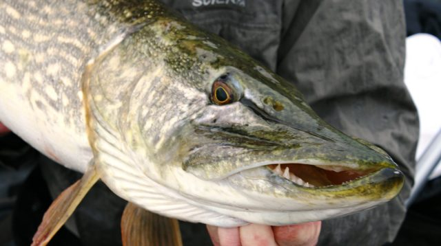
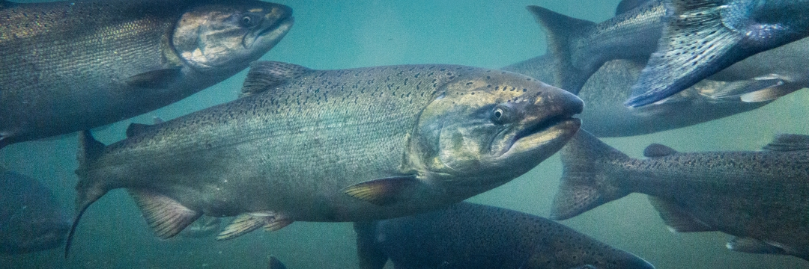
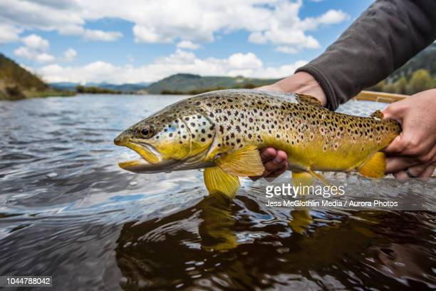
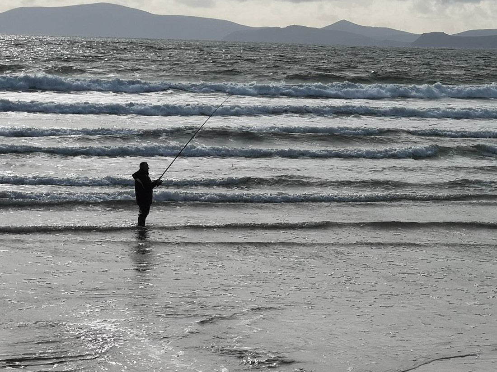
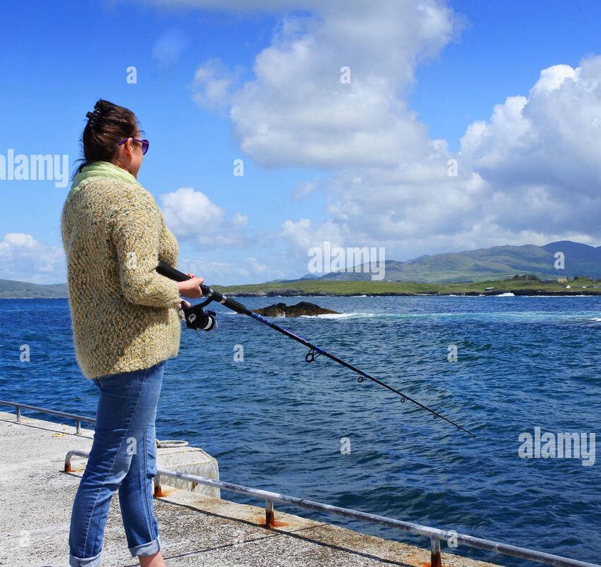
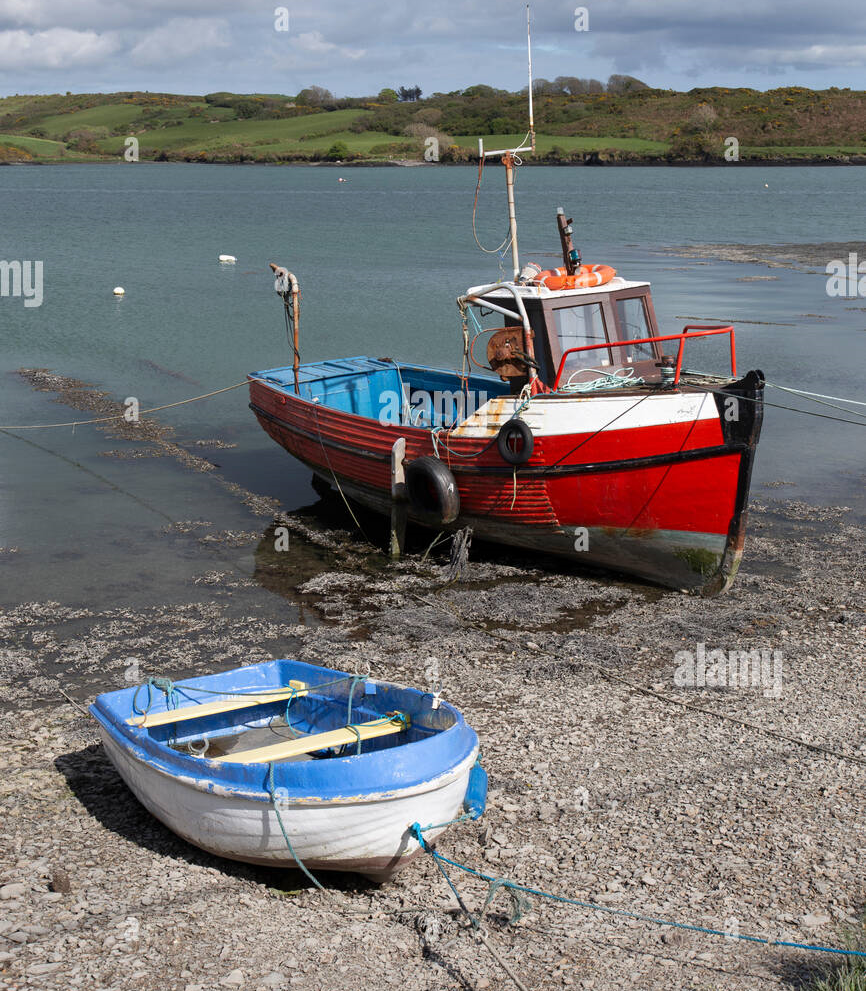
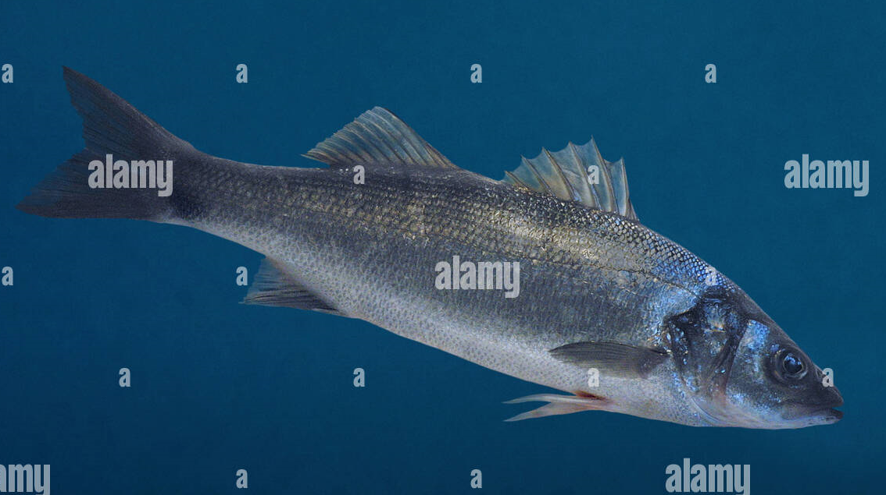
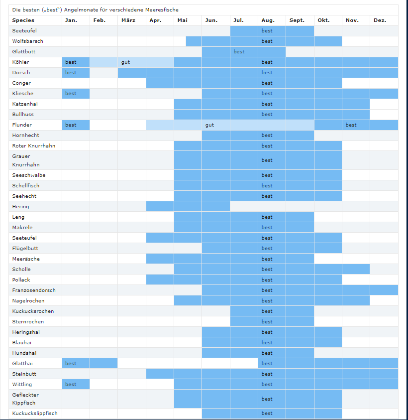

Wissenswertes

Hechtangeln
Inzwischen hat Irland aber auch unter Hechtanglern einen hervorragenden Ruf. Es gibt in Irland keine gesetzlich festgeschriebenen Schonzeiten für Hechte, Angler können dem Räuber deshalb das ganze Jahr hindurch nachstellen.
Hechte gehören inzwischen zu den beliebtesten Fischarten unter Anglern in Europa und Nordamerika und auch bei irischen Anglern wird das Hechtfischen immer beliebter. Irland ist stolz auf Tausende Seen (Loughs) und mehrere Tausend Kilometer Flüsse und Kanäle voller Hechte; Gewässer, die zum Großteil noch keinen Befischungsdruck kennen. Die Vielzahl an Hechten und die Qualität der Gewässer kann deshalb alle Erwartungen erfüllen.
Dies gilt für ausgesprochene Hechtspezialisten ebenso, wie für erfahrene Allrounder oder Anfänger. Und um die hohe Qualität für Hecht-Angler auch in der Zukunft zu erhalten, wurden unlängst einige Schutzbestimmungen erlassen.
Der Hecht (Esox lucius) ist in Irland der größte Süßwasser-Raubfisch. Er kommt in allen Gewässern vor, von Teichen über große Seen bis hin zu Flüssen und Kanälen. Irische Hechte wachsen schnell und können in einigen Gewässern bis zu 20 kg schwer werden; Fische mit einem Gewicht von 10 kg sind weit verbreitet. Hechte sind Fress-Opportunisten. Zu ihrer Beute zählen zumeist Weißfische wie Rotaugen, Rotfedern und Brachsen, aber etwa auch Aale.
Der lange torpedoförmige und mit grünen Tarnflecken überzogene Körper, sowie ihre großen Augen und das beeindruckende Maul mit einer Vielzahl furchterregender Zähne machen den Hecht zu einem effizienten Jäger. Der harte Widerstand den wilde irische Hechte im Drill liefern, ist ein weiterer Grund, warum dieser Fisch unter Hobbyanglern so beliebt ist.
Lachsangeln
Der Lachs galt zwar schon immer als „wertvoller“ Fisch, doch in Irland ist Lachsangeln für jedermann leicht möglichund auch kostengünstig. Mit jährlich neuen Flugrouten nach Irland wird auch der Anreiz für Angler immer größer, die grüne Insel auf der Liste ihrer Reiseziele an die Spitze zu setzen.
Große Flüsse wie der Munster Blackwater im Süden ermöglichen das Lachsangeln in einer großartigen Landschaft. Doch einerlei, in welchen unterschiedlichen Regionen und zu welchen Jahreszeiten in Irland geangelt wird, es gibt im Kern einen gemeinsamen Nenner: Es ist die in der heutigen Welt selten gewordene Erfahrung der Jagd nach wilden Fischen in einer natürlichen Umgebung.
Irland bietet die einzigartige Gelegenheit, das Angeln auf wilde Lachse und Meerforellen zu erleben. Beide Arten sind hier heimisch und haben einen Ehrenplatz in der irischen Kultur inne.
Irlands Seen (Loughs) und Flüsse haben ihren Charakter erhalten in einer Landschaft, die sich über die Jahrhunderte nur wenig verändert hat. Irland, das sowohl unverbaut ist als auch kaum unter Umweltverschmutzung leidet, hat seit Jahrhunderten Lachs und Meerforellen ein ideales Habitat geboten.


Forellenangeln
Irlands Hauptflüsse haben eine Gesamtlänge von 16.000 km, die unverbauten und relativ sauberen Nebenflüsse sind weitere 10.000 km lang. Dazu kommen noch Seen mit einer Fläche von rund 200.000 Hektar. Irland ist ein überwiegend agrarisch strukturiertes Land geblieben, mit einer geringen Einwohnerzahl und einer Bevölkerung, die vor allem in den Küstenregionen lebt. Die Landschaft gleicht einem Flickenteppich von Weiden und Mooren, die durch ein Aderwerk aus Flüssen und Strömen entwässert werden.
Irlands Flüsse und Seen sind seit langem bekannt für tolles Angeln auf wilde Brown Trouts. Der britische Adlige Viscount Grey of Falloden schreibt in seinem Klassiker „Fly Fishing” (Fliegenfischen) von 1899, das Angeln sei in englischen Kreideflüssen zwar am besten. Aber das „wildeste und aufregendste Fischen mit der Trockenfliege” habe er am River Suir im irischen County Tipperary erlebt.
Der Lebensraum wilder Forellen wird überall in Europa immer kleiner und zugleich bekommt Fliegenfischen einen unnatürlichen Charakter, weil zunehmend mit Regenbogenforellen besetzt wird.
Mit Blick darauf bietet Irland das ultimative Fliegenfischererlebnis: die Jagd auf wilde Forellen, die schlüpfenden Insekten in natürlichen Gewässern nachstellen. Flüsse wie der Fergus in der Grafschaft Clare bieten einen herausfordernden Sport mit selektiven und großen Forellen in einer beeindruckenden Landschaft.
Auch die kleineren Kalkstein-Flüssen der Grafschaften Meath oder Kilkenny, bieten erstklassige Möglichkeiten. Irische Forellen können sehr groß werden. Jedes Jahr werden Forellen mit einem Gewicht von 5 kg gefangen und hin und wieder sogar Fische mit 10 kg.
Meeresangeln
Meeresangler bietet diese Vielfalt beinahe das ganze Jahr über ungeahnte Möglichkeiten. Das irische Klima bringt im Sommer zuweilen gemischtes Wetter mit Sonne und Regen mit sich.
Aber da das Meer, vor allem an der Süd- und Westküste Irlands, vom Golfstrom profitiert, können Sie dort vom Frühjahr bis spät in den Herbst hinein Arten Fangen, die man anderswo nur in den Sommermonaten vorfindet (siehe auch Tabelle für die besten Fangzeiten)
Deshalb werden hier oft ungewöhnliche Warmwasserarten gefangen, wie etwa Drückerfische, Meeräsche, Rotbrachse, GottesLachs und Gelbschwanzmakrele. Da sich die irische Küste im Grenzbereich zwischen den kühleren nordatlantischen Gewässern und der südlichen Sphäre befindet, halten sich hier auch viele Kaltwasserarten auf.
Insgesamt können Sie in der See um Irland herum über 80 Arten fangen. Und dieser großartige Fischreichtum ist dem Angler, der Ruhe und Entspannung in einem der am dünnsten besiedelten Länder Europas sucht, ebenso leicht zugänglich wie dem Fischer, der seinem Sport gern in der Gesellschaft Gleichgesinnter frönt.


Meeresangeln vom Ufer
Stürmische Küsten
Da die Strände zum größten Teil seicht und sicher sind, können Sie es durchaus wagen, vorsichtig durch die Wellen zu waten, um ein Angelerlebnis zu genießen, das sich ähnlich wie das Lachsfischen mit keiner anderen Art des Angeln vergleichen lässt.
Bevor Sie an diesen Stränden angeln, sollten Sie sich aber unbedingt vor Ort erkundigen, wie es mit der Sicherheit bestellt ist.
Der Bestand an Wolfsbarsch, früher hier die meistgefangene Art, erholt sich mittlerweile wieder. Rochen, Flunder und Katzenhai sind allerdings zahlreich, und eine fette Kerry-Flunder in Pfannengröße ist eine ausgezeichnete Mahlzeit. An einigen dieser Strände treffen Sie vielleicht, ebenso auf Hundshaie wie entlang der Küste von Clare, Galway und Mayo. Diese Fische versprechen Ihnen ein aufregendes Angelerlebnis.
Hundshaie werden ausnahmslos wieder lebend zurückgesetzt. Die Strände von Nordwexford bieten im Frühjahr ausgezeichnete Bedingungen für das Fischen auf Glatthai und Rochen, während die Kiesstrände Wicklows und die Cork vorgelagerte Küste in Winter jungen Dorsch aufweisen.
Felsenküsten
Zwei der bei Felsenfischern beliebtesten Arten, Pollack und Lippfische, sind hier sehr zahlreich. Die zerklüftete Küstenlinie der Halbinseln Beara, Iveragh und Dingle im Südwesten bietet Ihnen großartiges Fischen auf diese Arten, aber Sie können sie auch an ähnlichen Stellen an der Küste im Nord- und Südwesten finden.
Vor den Inseln, etwa Valentia im Südwesten, oder entlang der Küste von Clare finden Sie ebenfalls sehr gute Bedingungen für das Klippenfischen.
Häfen
Hundshai und Meerbarsch sind dreiste Gesellen, die Goldmeeräsche dagegen ist ein scheuer Fisch, der meist in den ruhigeren Bereichen der irischen Küste zu finden ist. Am liebsten hält sie sich in Häfen und Buchten auf.
Sie gleitet auf der hereinkommenden Flut, und man kann sie in Wirbeln und Bugwellen in seichten Gewässern sehen. Es ist äußerst schwierig, sie mit Schwimmer und einer leichter Süßwasserangel zu fangen, aber in den Sommermonaten können Sie das nach Blieben rund um Irlands Küste tun.
Wenn die Meeräsche erst einmal gebissen hat, wird sie Sie und Ihre Ausrüstung mit ihrer großen Kampfkraft auf eine harte Probe stellen.

Küstennahes Angeln vom Boot
Viele Angelurlauber bringen ihr eigenes, speziell ausgerüstetes 4-5,5 m langes Boot mit in eines der zahlreichen Fischereizentren. Dort ist auch Rat zu den besten Angelplätzen und zu Sicherheitsfragen jederzeit erhältlich.
Angeln von kleinen Booten aus ist auch die beste Art, um zu Plätzen zu gelangen, die entweder von größeren Booten nicht angefahren werden können und für den Küstenfischer unzugänglich sind. In den irischen Küstengewässern finden Sie einen großen Artenreichtum. An warmen Spätsommertagen lässt es sich gut fischen, wenn Sie mit leichten Spinnködern auf Makrele oder Pollack gehen.
Wenn Sie wollen, können Sie sich im Fliegenfischen versuchen. Oder Sie können Grundfischen auf Rochen oder noch größere Arten: etwa in der Mündung des Shannon mit einer ganzen, früh am Tag gefangenen Makrele als Köder auf Hundshai.
Das Fischen von einem kleinen Boot mit einem starken Außenbordmotor erfordert aber eine äußerst umsichtige Einschätzung der herrschenden Wetterbedingungen. Wenn Sie sich jedoch nach den örtlichen Regelungen und Ratschlägen richten und Wetterveränderungen beachten, können Sie sichere Angeltörns genießen.
Wolfsbarsch
Der prächtige stromlinienförmige Wolfsbarsch mit seiner stacheligen Rückenflosse und kraftvoll gegabelten Schwanzflosse genießt den Respekt der Strand- und Bootsangler gleichermaßen.
Wolfsbarsche werden oft mit Lachsen verglichen, daher rührt auch der lokale Falschname Lachs-Barsch her. Diese Art kommt oft sehr nah unter Land. Sie wird mit unterschiedlichsten Methoden und Angelgeräten in der Brandungam Strand, in Flussmündungen, an Landzungen oder Landungsstegen gefangen.
Schutz
Ein Weibchen mit 5 kg ist immerhin schon 16-18 Jahre alt! Wir empfehlen Anglern deshalb das „catch and relaese“ (Fangen und wieder freilassen).
Folgende Regeln sind zu beachten
-Angler dürfen maximal zwei Fische innerhalb 24 Stunden entnehmen und mit sich führen.
-Die Schonzeit dauert vom 15. Mai bis 15. Juni. Falls Sie in dieser Zeit zufällig einen Wolfsbarsch fangen sollten, muss der Fisch zurückgesetzt werden.
-Kapitale Fische können in dieser Zeit nicht gemeldet werden.
Das Mindestgewicht, um einen Wolfsbarsch als kapital anmelden zu können, liegt bei 4,535 kg. Der irische Rekord steht bei 8,077 kg.


Angelsaison
Dagegen sind Arten wie Lippfisch, Pollack oder Katzenhai in den wärmeren Monaten sehr viel aktiver, ihre Saison reicht deshalb von April bis Oktober.
Zudem sollten Angler den Einfluss des irischen Klimas und das natürliche Verhalten der Fische mit Blick auf die besten Angelzeiten in Betracht ziehen.
Alles Meeresangeln wird beeinflusst vom monatlichen Gezeitenrhythmus. „Springtiden und starker Wind machen nicht gute Plätze zum Brandungsfischen unbegehbar; sie beieinträchtigen zudem auch das Angeln vom Boot aus. Auflandige Winde und Wellen machen dann das Bootsangeln für kurze Zeiten sogar gefährlich. Aber wie auch immer, Küstenangler finden immer windgeschützte Abschnitte, wenn andere von Flut und Strakwind am Angeln gehindert werden.